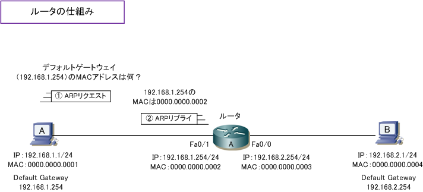
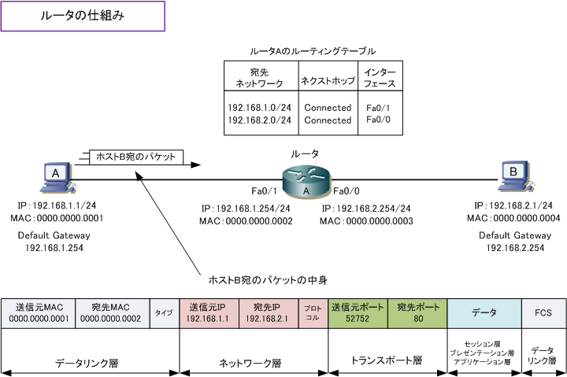
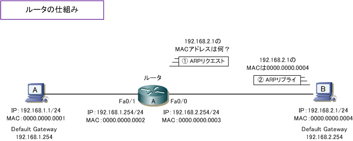
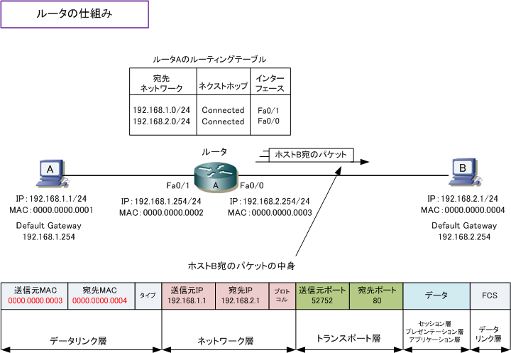
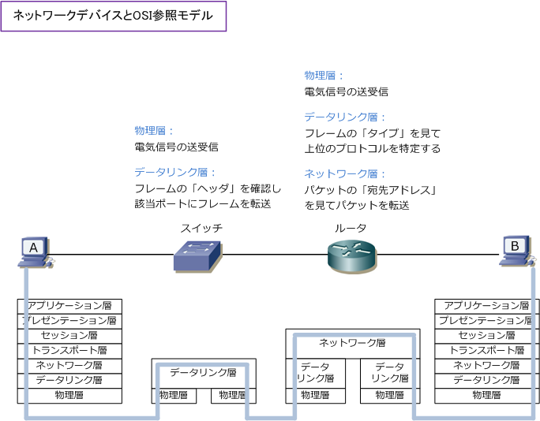
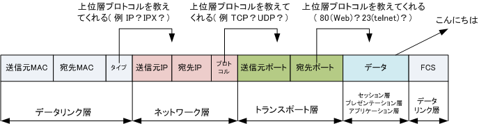

Ethernet LAN - Router
ルータ の動作の仕組み
通信相手のホストが異なるネットワークセグメントにいる場合、ルータやL3スイッチを経由して通信を 行う必要があります。今回はルータを経由したホストAとBの通信がどのようになるのかを見ていきます。
ホストAは自身のIPアドレスとサブネットマスクの情報から、通信相手のホストBは異なるセグメントに いると認識してデフォルトゲートウェイにデータを送信しようとします。(ゲートウェイはルータのIP）。 Ethernet LANで通信するためにはMACアドレスの情報が必要なのでARPリクエストをブロードキャスト。 ルータFa0/1で受信すると、要求されるIPが自分のIPと一致したのでARPリプライでMACアドレスを通知。

ホストAはデフォルトゲートウェイ（ルータ）のFa0/1のMACアドレスを知られたので、ルータにパケット を転送します。パケットを受信したルータは、宛先MACアドレスが自身のFa0/1のアドレスであると分かり ましたが、宛先IPアドレスは自身インターフェースのIPアドレスではないと分かります。そこで、ルータは ルーティングテーブルに従いパケットをFa0/0に転送します。ネクストホップがconnectedであることから、 ルータ自身のインターフェース（Fa0/0）のセグメントであると分かります。

宛先IPアドレスが自身のインターフェースのセグメントなので、ルータは 192.168.2.1 のMACアドレスを ARPキャッシュしていないか確認してARPテーブルに 192.168.2.1 とMACアドレス情報がない場合、ARP リクエストを送信します。ホストBは自身のIPアドレスと合致したので、ARPリプライで自身のMACを通知。

ホストBからのARPリプライにより、ホストBのMACアドレスが分かったルータはホストBにパケットを転送。 先ほどのパケットフォーマットとの変更点は、送信元MACアドレスと宛先MACアドレスとなります。今度は 逆にホストBからAへの通信は同様の流れで、ホストBが192.168.2.254のMACアドレスを知ることから開始。

ネットワークデバイスとOSI参照モデル
スイッチはデータリンク層の機器なので第二層だけ、ルータはネットワーク層の機器なので第三層しか 見ないというのではなく、スイッチは第二層までみて、ルータは第三層までみて動作を行っています。 ※ メーカの製品仕様により第何層まで動作するのかは異なりますが、一般的にはスイッチは第二層までルータは第三層まで。

ホストの場合、物理層で受信したイーサネットフレームをデータリンク層から順番にアプリケーション層 まで非カプセル化を行っていき、最終的に人間の目で見てわかるデータをパソコン上の画面に出力します。
